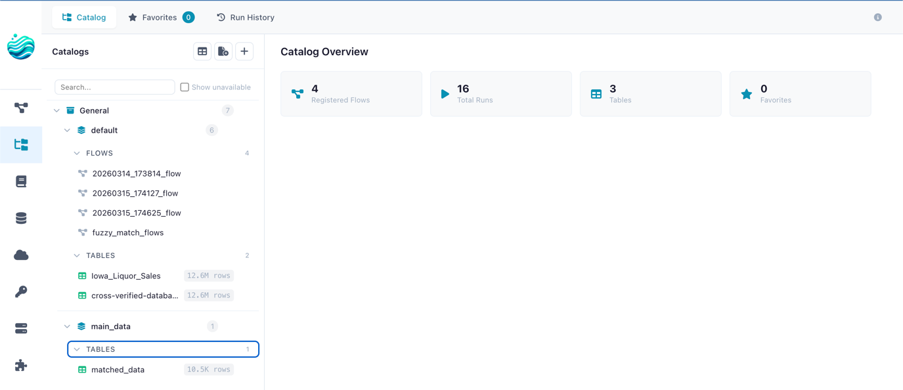
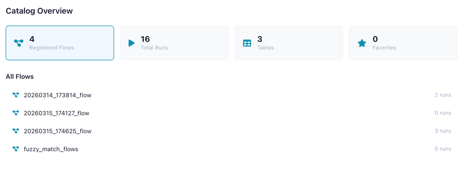
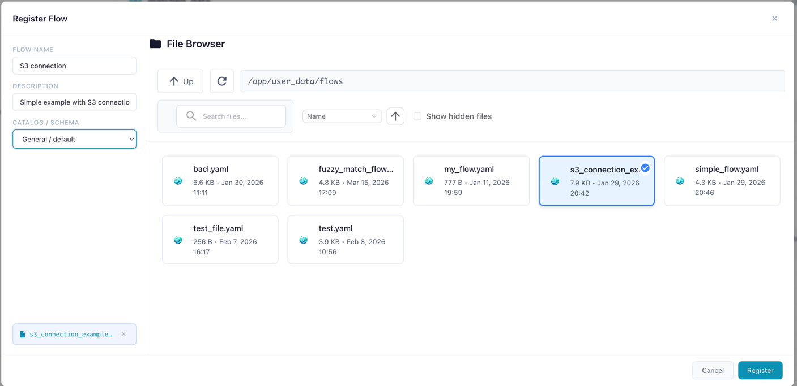
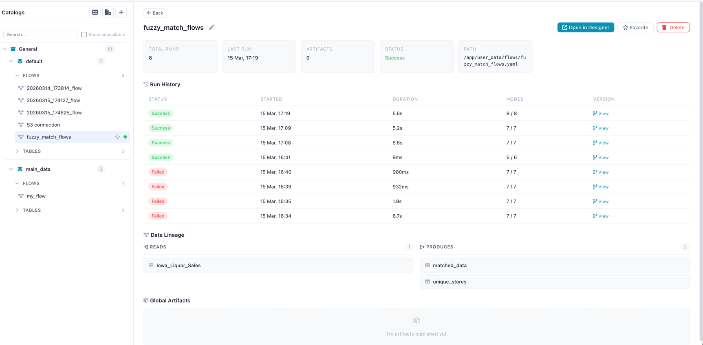
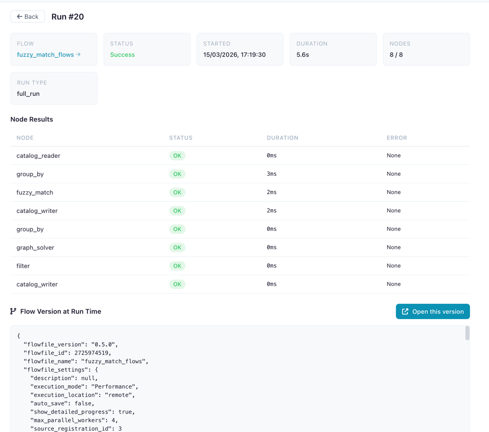
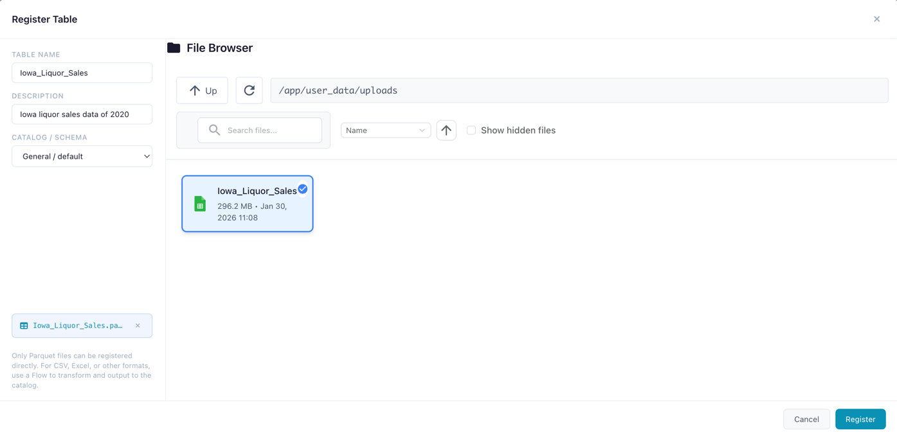
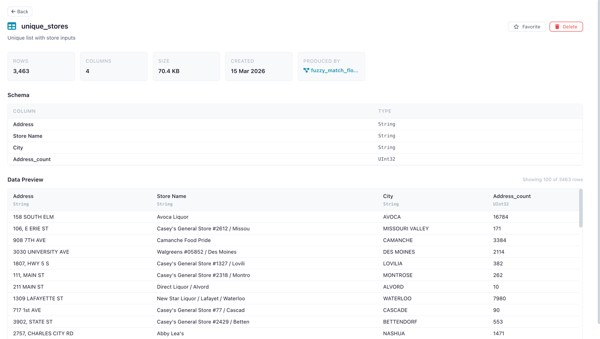

Catalog
Organize, track, and govern your data flows and tables in a central catalog.
The Catalog is your single pane of glass for managing flows, tracking execution history, registering data tables (physical and virtual), querying data with SQL, sharing artifacts across flows, and automating pipelines with schedules.

The Catalog page with namespace tree, tabs, and dashboard statistics
Opening the Catalog
Click the Catalog icon in the left sidebar menu to open the Catalog page.
Dashboard
When no item is selected, the Catalog shows an overview dashboard with key metrics and quick-access panels.
| Metric | Description |
|---|---|
| Registered Flows | Flows tracked in the catalog |
| Total Runs | Number of flow executions recorded |
| Tables | Catalog tables (physical + virtual) |
| Virtual Tables | Virtual flow tables that resolve on demand |
| Favorites | Your bookmarked flows and tables |
| Artifacts | Global artifacts published by flows |
| Schedules | Configured schedules for automated flow execution |
The dashboard also shows recent runs, favorite flows, and favorite tables for quick navigation.

Dashboard showing overview metrics
Namespaces
Namespaces organize your catalog into a two-level hierarchy:
- Catalog (level 0) — Top-level container (e.g.,
production,development) - Schema (level 1) — Sub-container within a catalog (e.g.,
sales,analytics)
Flows, tables, and artifacts are always registered under a schema.
Creating a Namespace
- Click the + button next to "Catalog" in the tree sidebar
- Choose whether to create a Catalog (top-level) or Schema (under an existing catalog)
- Enter a name and optional description
- Click Create
A default catalog (General) and schema (default) are created automatically on first use.
Tabs
The sidebar offers four tabs:
| Tab | Description |
|---|---|
| Catalog | Browse the namespace tree with flows, tables, and artifacts |
| Favorites | Your starred flows and tables for quick access |
| Run History | Chronological list of all flow executions |
| Schedules | Manage automated flow schedules — see Schedules |
Registering Flows
Register a flow to enable run tracking, artifact lineage, catalog table production, and virtual tables.
- Navigate to the desired schema in the tree
- Click Register Flow
- Select the flow file (
.yaml) from the file browser - Enter a name and optional description
- Click Register

Registering a flow file under a catalog schema
Auto-registration
When you open or import a flow in the designer, it is automatically registered in the default namespace (General > default) if it isn't already. You don't need to manually register every flow — just the ones you want to organize into specific namespaces.
Flow Detail Panel
Click a registered flow to see its detail panel:
- Name (editable inline) and description
- Metrics: total runs, success rate, last run time, artifact count
- Actions: Open in Designer, Run Flow, Cancel Run, Favorite, Delete
- Recent Runs table with status, duration, and trigger type
- Schedules section — manage schedules for this flow (see Schedules)
- Produced Artifacts list

Flow detail panel showing metrics, recent runs, and actions
Missing Flow File
If the flow's .yaml file has been moved or deleted, a warning banner appears.
The flow metadata and run history are preserved, but the flow cannot be opened in the designer.
Run History
Every execution of a registered flow is recorded with:
| Field | Description |
|---|---|
| Status | Success or failure (with error details) |
| Started / Ended | Timestamps |
| Duration | Execution time in seconds |
| Nodes Completed | Progress (completed / total) |
| Run Type | How the flow was triggered (manual, scheduled, table trigger) |
| Flow Snapshot | YAML snapshot of the flow version at run time |
Run Detail Panel
Click a run to see its full detail:
- Status badge and metadata
- Node Results table: each node's status, duration, and error messages
- Flow Snapshot: the exact flow version that was executed
- Open Snapshot in Designer button to recreate the flow as it was

Run detail showing node results and snapshot
Catalog Tables
Register data tables in the catalog for reuse across flows. Catalog tables come in two types:
| Type | Icon | Description |
|---|---|---|
| Physical | Data materialized as a Delta table on disk — fast reads, version history, full schema preservation | |
| Virtual | No data on disk — executes a producer flow on demand to produce results. See Virtual Flow Tables |
Recommended: Register tables via a flow
Use a Catalog Writer node in your flow for the best experience. It supports more source types, ensures correct data interpretation, and enables lineage tracking.
Registering a Physical Table
- Navigate to a schema in the tree
- Click Register Table
- Select a Parquet file (
.parquet) - Enter a name
- Click Register
The file is materialized as a Delta table and registered with full metadata.

Registering a new catalog table from a data file
Creating a Virtual Table
Virtual tables can be created in two ways: via a Catalog Writer node in virtual mode (flow-based), or via Save as Virtual Table in the SQL Editor (query-based). See Virtual Flow Tables for the full guide.
Table Detail Panel
Click a table to view:
- Metadata: name, namespace, row count, column count, file size, creation date
- Schema: column names and data types
- Data Preview: scrollable preview of the first 100 rows
- Lineage: source flow, producing flow, and consumer flows (see Lineage)
- Favorite toggle (star icon) to bookmark the table
- Delete button with confirmation
For virtual tables, the detail panel also shows:
- Table type: "virtual" badge
- Producer flow: the registered flow that produces this table
- Optimization status: whether the table uses optimized or standard resolution
- Laziness blockers: if not optimized, which nodes prevent lazy execution

Table detail panel showing schema and data preview
Using Catalog Tables in Flows
Use the Catalog Reader input node to read a catalog table (physical or virtual) and the Catalog Writer output node to write results back. See Input Nodes and Output Nodes.
Lineage
The catalog tracks full data lineage — which flows produce and consume each table:
| Relationship | Description |
|---|---|
| Source flow | The registered flow (and specific run) that created or last wrote to the table |
| Producer flow | For virtual tables: the flow that produces data on demand |
| Consumer flows | Flows that read from this table via Catalog Reader nodes |
This lineage graph enables powerful automation: when a table is updated, any table trigger schedule watching it fires automatically, creating reactive data pipelines.
How Storage Works
Physical Tables — Delta Format
When you register a table or write via a Catalog Writer node, the data is materialized as a Delta table. Delta provides:
- Version history — every write creates a new version, enabling time-travel queries
- Schema evolution — columns can be added or modified across versions
- ACID transactions — writes are atomic and consistent
- Efficient storage — columnar Parquet files with metadata tracking
Materialization process:
- The source data is processed by the worker service using Polars
- The data is written as a Delta table to the catalog storage directory
- Metadata is extracted: row count, column count, file size, and column schema (names + Polars data types)
- A database record links the table name, namespace, and file path
Storage location:
| Environment | Path |
|---|---|
| Desktop / local | ~/.flowfile/catalog_tables/ |
| Docker | /data/user/catalog_tables/ (mapped via FLOWFILE_USER_DATA_DIR) |
File naming: Each Delta table directory is named {table_name}_{uuid} (e.g., sales_data_a3f1b2c4/). The UUID suffix ensures uniqueness even when multiple tables share similar names.
Flat storage
Namespaces (catalogs and schemas) are a logical hierarchy stored in the database — not filesystem directories. All Delta table directories live in a single flat storage directory. Table name uniqueness is enforced per namespace, so two schemas can each have a table called customers without conflict.
Virtual Tables — No Storage
Virtual tables store no data on disk. The catalog entry holds only metadata (name, schema, producer flow reference) and, for optimized tables, a serialized Polars LazyFrame. See Virtual Flow Tables for details.
Delta Table History
Physical catalog tables stored in Delta format maintain a full version history. You can browse historical versions and preview data at any point in time.
Viewing History
In the table detail panel, the History section shows:
- Current version number
- Version list with timestamps, operation types, and metadata
- Preview at version — select any historical version to see the data as it was at that point
This is especially useful for auditing changes, debugging data quality issues, and understanding how a table evolved over time.
Delta versioning is only available for physical tables
Virtual tables have no physical storage and therefore no version history. If you need historical snapshots, use a physical table.
SQL Editor
Query catalog tables directly using SQL. See the dedicated SQL Editor page for full documentation, examples, and the Save as Flow feature.
Favorites
Favorite a flow or table (star icon) to bookmark it in the Favorites tab for quick access. Favorites are per-user and can be toggled from detail panels or inline in the tree.
Global Artifacts
Global artifacts are Python objects (ML models, DataFrames, configs) persisted in the catalog and accessible from any flow. They are published from Kernel code using flowfile.publish_global().
Click an artifact in the tree to view its versions, metadata, and producing flow.
Related Documentation
- Virtual Flow Tables — Non-materialized tables with on-demand resolution
- Schedules — Automating flow execution with schedules and table triggers
- SQL Editor — Ad-hoc SQL queries against catalog tables
- Kernel Execution — Publishing global artifacts from Python code
- Input Nodes — Catalog Reader node
- Output Nodes — Catalog Writer node (physical and virtual modes)
- Building Flows — Creating workflows in the visual editor
- Reading Data (Python API) —
read_catalog_table()andread_catalog_sql() - Writing Data (Python API) —
write_catalog_table()with virtual mode